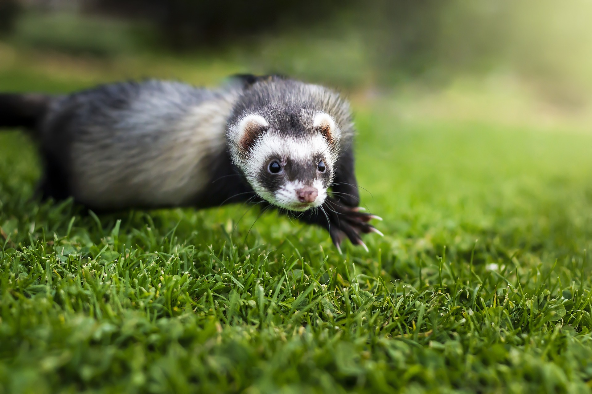

Be a part of the Adopt a Paw community for pets and their people. Join our pack!
Adoption Procedures
Thank you for considering adopting from Adopt a Paw! Below are our general adoption procedures.
- Adoption areas are open to the public for walk-throughs during viewing/adoption hours (no application is needed to walk through).
- Applicants must be 18 years or older. A valid ID will be required in order to adopt.
- Applications can be completed both online and in person.
- In most cases, animals will be viewed and adopted on the same day, as long as all requirements have been met!
- When you arrive to view an animal, we require all members of the household to be present.
- DOG viewings: Bring any dogs that are currently in the home; if you have a cat we will do a cat introduction with a HAWS cat prior to viewing.
- Dog/cat introductions are viewed and evaluated by an experienced member of our staff. If there is any issue with the introduction, we will work with you on safely managing at-home interactions, or, if necessary, will help you choose a different pet to adopt.
- CAT & SMALL ANIMAL viewings: Unlike considering adopting a dog, please leave your pet(s) in the comfort of your home.
- When adopting, we ask that you bring a pet carrier. If you do not have one, we will provide you with one.
- If you are unable to meet the requirements, you may not be able to view or adopt.
- Lastly, please make sure that you bring an acceptable form of payment (Cash, Credit/Debit)
Thank you for adopting from Adopt a Paw!


